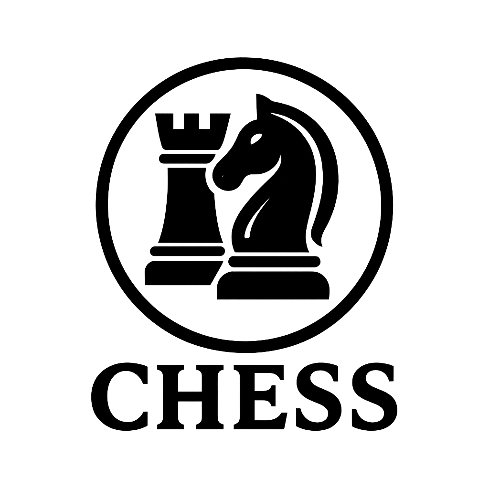

Personal Projects
-
Tortilla Thyme
An up and running site to grab recipes from popular sites simply from a URL. No more ads! Also used to share recipes with family and friends, add recipes to a meal calendar and generate grocery lists. Click to read more and try it out! -
ScriptureLensAI
An up and running website that organizes sacred texts and helps people find relevant passages to their questions or other scriptures. Uses OpenAI to create the vector embeddings of the passages. Uses semantic and lexical search features to suggest relevant passages. Try this one out too! -
GlTron Game Mods
Modified the open source classic game GlTron with new features: speed boost indicator, 6 players, Classic Snake Mode, Team Mode. My first .exe Windows application. -
Lexicon Lounge
A collection of interactive word games including Ghost, SuperGhost, and more variants
School Projects
-
Tweeter
A school project to learn software architecture. Improved the frontend of a social media site and built the backend. Used AWS tools (Lambda, SQS, S3, DynamoDB), implemented MVP model and double queue system for efficient horizontal scaling. -
Chess
A Java-based chess implementation with complete game logic and peer to peer multiplayer support -
Data Query Interpreter
A Python based data query interpreter for relational data and operations -
Marshallese Translate Website
My very first web application! I built a very primitive algorithm to translate from English to Marshallese. Hadlive chat capabilities with other users, friend request/accept logic, and flashcards. Used MongoDB and AWS EC2